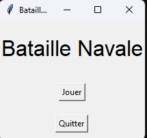
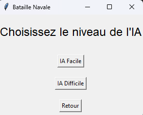
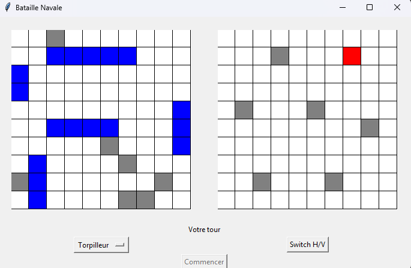
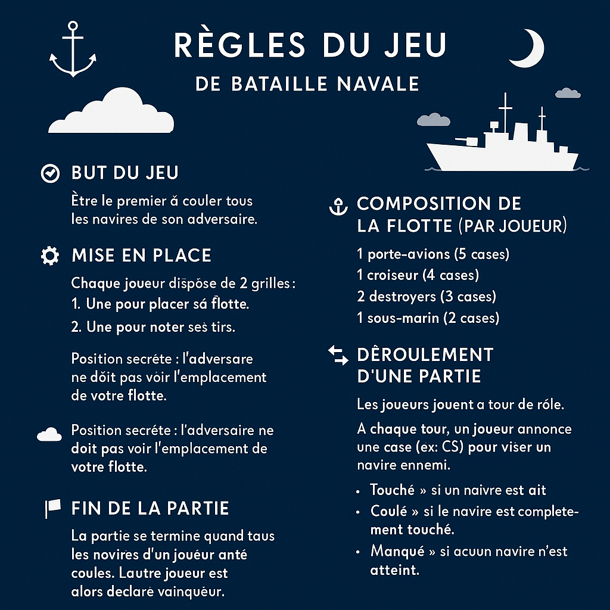

Sommaire
- Introduction
- Comparaison
- Diagramme de GANTT
- Interface graphique
- Explication du jeu
- Règles du jeu
- Fonctionnement du jeu
- Fonctions intéressantes et compliquées
- Notre ressenti
- Conclusion
- Difficultés rencontrées
- Compétences apportées
I. Introduction
Du 10 mars 2025 au 25 mai 2025, un projet nous a été donné, celui de créer un jeu Bataille Navale codé en Python à l’aide des logiciels PyCharm et Visual Studio Code. L’objectif était de reproduire le jeu avec les vraies règles, une interface graphique, et deux IA de difficultés différentes.
II. Comparaison ↑
1. Diagramme de GANTT
Avant de réaliser le code, nous avons fait un diagramme de GANTT avec des objectifs répartis sur différentes périodes :
- Interface graphique : du 17/03 au 02/04
- Menu : du 03/04 au 19/04
- Amélioration interface : du 20/04 au 06/05
- Jeu : du 17/03 au 02/04
- IA : du 03/04 au 06/05
- Facile : du 03/04 au 19/04
- Difficile : du 20/04 au 06/05
- Mise en commun : le 07/05
- Rassemblement des codes : du 07/05 au 12/05
- Livraison : le 12/05
- Documentation : du 13/05 au 18/05
- Préparation orale : du 19/05 au 25/05
2. Interface graphique
A. Interface prévue
(image exagérée)

B. Interface réalisée
Menu :
 Champ de bataille :
C. Options prévues
- Menu complet (choix niveau, statistiques, quitter)
- Déplacement des bateaux
- Retour au menu
- Bouton rejouer
- Affichage clair pour touché/coulé
D. Options réalisées
- Menu (choix du niveau, quitter)
- Clic pour placer les bateaux
- Affichage lors d’un bateau coulé
III. Explication ↑
1. Règles du jeu
La bataille navale est un jeu pour deux joueurs. Chacun a deux grilles : une pour placer ses bateaux, et une pour marquer ses tirs. Les bateaux sont placés en secret, horizontalement ou verticalement. Chaque joueur joue à tour de rôle en annonçant une case. Si c’est touché, on continue autour. Si toutes les cases d’un bateau sont touchées, il est coulé. Le but est de couler tous les bateaux adverses.
2. Fonctionnement du jeu
Nous avons créé notre code en repositionnant chaque élément par paragraphe afin de pouvoir nous y repérer (où commence telle et telle fonction etc…). Nous avons tout d’abord importé tkinter qui nous a permis de réaliser l’interface graphique mais aussi la fonction messagebox de tkinter qui permet d’afficher des messages, les bibliothèques random et copy. Nous avons ensuite créé un dictionnaire qui nous a permis de stocker les informations des bateaux, c’est-à-dire leur nom et leur taille. Nous avons une classe Cell qui représente chaque cellule des grilles. Cette classe permet de contenir les informations de si il y a un bateau sur cette case, si il y a eu un tir et si il y a un bateau elle retient son nom.
La classe Board elle représente chaque grille, la notre et celle de l’adversaire. Elle nous permet d’accéder a plusieurs informations. Cette grille nous permet de placer les bateaux, gérer les attaques et vérifier si un ou plusieurs bateau est coulé. Arrive ensuite la classe BattleshipGame, cette classe est en faite la classe principale du jeu, cette classe gère toute l’interface graphique et la logique du jeu. Elle contient l’affichage du menu principal, la sélection de l’IA, l’initialisation du plateau et de l’interface, la gestion du placement des bateaux par joueur, le placement des bateaux et du lancement de la bataille, l’affichage des grilles et des couleurs personnalisés en fonction de la présence d’un bateau ou non si il y a eu un tir raté, touché ou si le bateau est coulé et enfin la gestion de l’ordre des joueurs (chacun son tour). Il y a ensuite les IA → L’IA facile tire aléatoirement et si elle touche un bateau alors elle passe en mode chasse en testant les cases autour afin d’essayer de couler le bateau malgré quelques soucis (elle n’arrive pas à rester dans la même direction une fois qu’elle est trouvée). → Pour l’IA difficile, nous avons essayé de trouver une méthode qui rendrait les tirs aléatoires plus efficaces. Nous avons donc pensé que comme il n’y existe pas de bateau de la taille d’une cellule il suffisait de tirer une fois sur deux afin d’optimiser les chances de toucher un bateau plus rapidement. Et si elle touche un bateau elle active le même mode chasse que l’IA facile afin d’essayer de couler le bateau trouvé. Et enfin les lignes de code qui nous permettent de lancer le jeu. Ces dernières ligne de code nous permettent de créer la fenêtre que nous avons pu personnaliser avec tkinter.
3. Fonctions intéressantes et compliquées
La fonction “place_boat” de la classe “Board” : Cette fonction gère les placements de bateaux sur la grille. Elle vérifie que le bateau ne déplace pas la grille et elle s’assure qu’il n’y a pas déjà un bateau là où l’on veut (ou l’IA) poser le bateau. Si les conditions sont remplies alors le bateau est placé (la case enregistre de quel bateau il s’agit) et renvoi “True” pour informer qu’il y a un bateau. Si les conditions ne sont pas remplies alors le bateau ne se pose pas.
La fonction “easy_ai_turn” : Cette fonction gère l’IA facile en utilisant deux modes qui sont le mode normal et le mode chasse. Le mode chasse est le mode par défaut de l’IA facile qui fait que lorsque c’est son tour, elle tire sur n’importe quel case, et si elle touche un bateau alors le mode chasse s’active. Le mode chasse est utilisé pour essayer de couler le bateau adverse, l’IA va faire en sorte de tirer autour de la cellule où elle a touché pour faire couler le bateau complètement.
La fonction “hard_ai_turn” : Cette fonction gère l’IA difficile en utilisant deux modes également, le mode de tir normal qui est le tir par défaut et de chasse. Le mode chasse reste le même tandis que le mode de tir par défaut est plus complexe car l’IA ne tire que sur des cases qui ne sont jamais à côté du style damier (sauf pendant le mode chasse) car il n’y a pas de bateau d’une cellule et donc elle essaie d’avoir un tir plus optimisé afin de couler les bateaux du joueur adverse plus rapidement ce qui force le joueur a trouver une meilleure logique lors de son placement de bateaux et lors des tirs.
La fonction “draw_grid” : Cette fonction gère tout l’affichage graphique du plateau de jeu grâce à tkinter. Elle colorie chaque cellule en fonction de son état c’est-à-dire blanc pour une cellule vide, gris pour un tir raté, bleu pour un bateau non touché et rouge pour un bateau touché. Cette interface nous permet de savoir où en est le jeu sans difficulté malgré une absence de légende.
IV. Notre ressenti ↑
“Je pense que nous avons plutôt bien réussi notre projet de bataille navale, même si, pour moi, nous aurions pu faire beaucoup mieux en tenant compte du temps qui nous était imparti. Je pense que l’on a plutôt bien réussi notre interface graphique, mais que l’IA n’était pas assez bien à mon goût. Et surtout, le plus gros problème de ce projet est que l’on a trop eu recours à l’IA pour réaliser notre projet, et donc je ne suis pas très fier du rendu et de l'impression d’être mauvais.”
Lucas Picard
“Je trouve que cette idée de projet était très intéressante. Malheureusement, à titre personnel, il me semble que je n’avais pas les compétences nécessaires pour le réaliser. J’ai donc dû faire appel à l’intelligence artificielle et je n’en suis pas très fier. Je sais que ce n’est pas de moi que vient ce projet mais d’une IA. J’ai le même ressenti que Lucas dans l’impression d’être mauvais et j’ai aussi l’impression de ne pas avoir progressé depuis les anciens projets du style des petits exercices de début d’année qui nous permettait d’apprendre un petit peu de tout ou depuis le projet Pokémon.”
Gervy Tiago
V. Conclusion ↑
1. Difficultés rencontrées
Nous avons eu énormément de soucis lors du codage car manque de connaissances et c’était également notre premier gros projet donc nous avons eu du mal à imaginer les différentes tâches nécessaires au bon maintien du projet.
2. Compétences apportées
Nous sommes du même avis pour dire que ce projet était particulièrement complexe dans la programmation car nous avons un grand manque de connaissances et d’expérience. Nous souhaitons avoir l’occasion une prochaine fois de recommencer un projet du même style mais moins compliqué afin de progresser et de ne pas rester sur une mauvaise expérience.
VI. Présentation ↑
Vidéo de présentation du projet : (La vidéo a été entierement réaliser par Tiago)
Si vous voulez voir ce qui étais prévu au départ, voici le lien de la documentation de présentation du projet : Documentation
ouvrir le diaporama: Diaporama